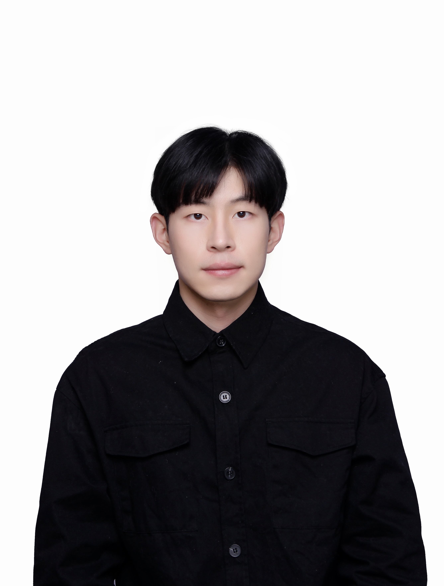

|
Shuichang Lai
Email: sclai[at]smail.nju.edu.cn
|
I'm currently an algorithm engineer at Tao Technology Department, Alibaba Group. I received M.S. degree in computer application from NanJing University in 2023, advised by Jie Guo and Prof. Yanwen Guo. Before that, I received my bachelor’s degree in the CS Department, NJUST.
My research interest lies at the intersection of computer vision and computer graphics. I am particularly excited about appearance modeling, material estimation, and 3D reconstruction.
Publications
- GLPanoDepth: Global-to-Local Panoramic Depth Estimation
Jiayang Bai, Shuichang Lai, Haoyu Qin, Jie Guo, Yanwen Guo
To appear in IEEE Transactions on Image Processing
- Practical Measurements of Translucent Materials with Inter-Pixel Translucency Prior
Zhenyu Chen, Jie Guo, Shuichang Lai, Ruoyu Fu, Mengxun Kong, Chen Wang, Hongyu Sun, Zhebin Zhang, Chen Li, Yanwen Guo
In CVPR 2024
- SVBRDF Reconstruction by Transferring Lighting Knowledge
Pengfei Zhu, Shuichang Lai, Mufan Chen, Jie Guo, Yifan Liu, Yanwen Guo
In Computer Graphics Forum, 2023
- Ultra-High Resolution SVBRDF Recovery from a Single Image
Jie Guo*, Shuichang Lai*, Qinghao Tu, Chengzhi Tao, Changqing Zou, Yanwen Guo
In ACM Transactions on Graphics, 2023
- Highlight-aware two-stream network for single-image SVBRDF acquisition
Jie Guo, Shuichang Lai, Chengzhi Tao, Yuelong Cai, Lei Wang, Yanwen Guo, Ling-Qi Yan
In ACM Transactions on Graphics, 2021(Proceedings of SIGGRAPH 2021) Talk
Experiences
-
[2023.5-2023.9] Algorithm Engineer Intern, ByteDance
-
[2023.2-2023.5] Engine Engineer Intern, Tencent IEG
-
[2019.10-2020.1] Algorithm Engineer Intern, Megvii
Awards
-
Fuyou Scholarship
-
National Scholarship in 2018, 2019